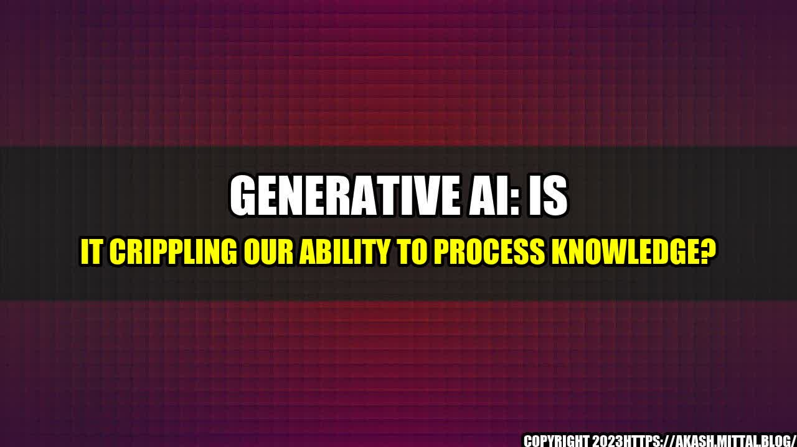

Generative AI: Is it Crippling Our Ability to Process Knowledge?

When I was in high school, I had a difficult time memorizing facts and figures for my history exams. I would spend hours going through my notes, trying to commit everything to memory. But no matter how hard I tried, I always struggled with retaining information.
Fast forward to today, and I'm amazed by how technology has evolved. With the advent of Generative AI like ChatGPT, we no longer have to rely solely on our own memory to process knowledge.
But as I've come to realize, there's a dark side to this newfound technology. While Generative AI has the ability to help us process knowledge faster, it also has the potential to cripple our own ability to learn and retain information.
In this article, I'll explore why Generative AI like ChatGPT is creating waves, but also how it could be harming our ability to process knowledge.
What is Generative AI?
Generative AI is a subfield of Artificial Intelligence that focuses on creating algorithms that can generate new content, such as text, images, and even music.
ChatGPT, for example, is a popular Generative AI tool that uses natural language processing to generate text that mimics human conversation. It has the ability to answer questions, provide information, and even generate creative writing.

In fact, according to OpenAI, the organization behind ChatGPT, the latest version of the tool is capable of generating text that is almost identical to that produced by human writers in a range of tasks.
As a writer, I've experimented with ChatGPT and have been amazed by its ability to generate coherent and engaging content in a matter of seconds. But at the same time, I've also felt a sense of unease - do we really need AI to help us write?
While Generative AI certainly has its benefits, there are also some potential downsides we need to consider.
The Downsides of Generative AI
1. Dependence on Technology
One of the biggest downsides of Generative AI is that it can lead to a dependence on technology to process knowledge. When we rely too heavily on AI to help us think and learn, we run the risk of losing our own ability to do so.
For example, instead of using our own memory and critical thinking skills to solve a problem or answer a question, we may simply rely on AI to provide us with the answer. This can lead to a lack of creativity, originality, and independent thinking.

According to a survey by Pew Research Center, 72% of Americans worry that AI will make them too reliant on technology for decision-making. And while AI can certainly be helpful in many areas, it's important to also be mindful of how much we rely on it.
2. Bias and Inaccuracy
Another potential downside of Generative AI is the risk of bias and inaccuracy. Since AI is programmed by humans, it can inherit the biases, stereotypes, and inaccuracies of its creators.
For example, if an AI tool is only trained on a narrow set of data, it may not be able to accurately generate content or answer questions outside of that data set. Similarly, if the data set is biased or inaccurate, the AI tool may reproduce those same biases and inaccuracies.
As a journalist, I've seen the negative impact of bias and inaccuracy in AI-generated content. Last year, I came across an article that was written entirely by an AI tool. While the content was technically correct, it lacked the nuance and context that only a human writer could provide.
3. Artificial Intelligence vs Natural Intelligence
Finally, Generative AI also raises questions about the value of natural intelligence - that is, our own innate ability to think, learn, and process knowledge.
While AI can certainly augment our own abilities, it's important to remember that AI is not a replacement for human intelligence. AI lacks the ability to truly understand human emotions, perspectives, and experiences, and this can limit its ability to truly replicate human thought and creativity.
Furthermore, as we become more dependent on AI to process knowledge, we run the risk of losing touch with the value of learning and growing on our own.
As Albert Einstein once said, "I have no special talent, I am only passionately curious." It's this curiosity and drive to learn that sets us apart from AI. While AI can certainly help us process knowledge more efficiently, it's our own human curiosity and willingness to learn that sets us apart.
Curated by Team Akash.Mittal.Blog
Share on Twitter Share on LinkedIn